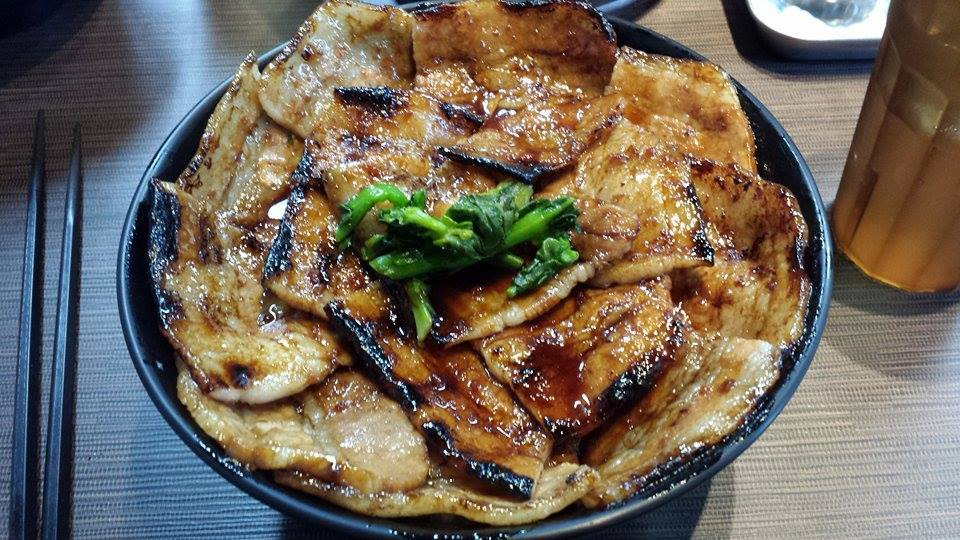

September 7th, 2015
Alex
On Monday morning I had to go to the local city office of Suginami to finish all my paperwork. A few students from Meiji came by Izumi to help us with all the forms since they’re all in Japanese. After about four hours of paperwork and waiting, they finally let us out and I got to go home. I spent most of the day in the dorm but in the evening Kevin and I went out for dinner. We went to this yakitori place (which is basically just meat on a stick) nearby and it ended up being really really good. Later, Tomo came back to the dorm again and we just hung out for a few hours.
Mindy
Was a burrito.
September 8th, 2015
Alex
To be honest, I did absolutely nothing on Tuesday. Kevin had to do his residency stuff so we only met up pretty late in the day to get dinner. There’s a Japanese fast food chain called “Hanamaru” that serves udon and I hadn’t gotten the chance to visit it yet so we tried to find the closest one. We went all the way to Shinjuku to get some but it was absolutely worth it because it’s one of my favorite restaurants in Japan.
Mindy
I continued to do pretty much nothing at home for the whole week but on Tuesday I got some good news from Olin. I got the OK from Olin's entrepreneurship professor, Lawrence, to substitute his class with one from Japan. Normally I wouldn’t be getting any useful credits here for back home but now I can at least get them for one class. I still needed to talk to the professor from Sophia about it so I emailed CIEE asking them, hoping to get a timely response.
September 9th, 2015
Alex
Wednesday was the date of the typhoon in Japan. I had to go to my orientation on Meiji’s main campus at 9:30 in the morning but the rain was absolutely terrible. I sat through a two hour orientation that mainly asked us to fill out some more forms and gave us some info on choosing classes. I went to another favorite place of mine, butadon, for lunch. They only serve cooked pork on rice but it’s the best pork I’ve ever had so I go there pretty often.
I came back to take a Japanese language test that decide which level of Japanese I belong in. Unfortunately, I don’t know Japanese. I answered a few questions and handed it in because there really was no reason for me to spend an hour circling random answers. Later that night, Kevin and I met up with a friend of mine from high school, Sean, who’s also studying in Japan. We caught up and got dinner and Shibuya before deciding to go home.
Mindy
Another day at home meant another day of doing nothing. It says a lot when the most exciting part of my day is failing to crack an egg when making noodles.
September 10th, 2015
Alex
Thursday morning Kevin and I had to go back to Meiji campus to meet with our academic advisor, professor Dairokuno. He gave us a list of classes we could take and told us how we could go about applying for them. Unfortunately, I have to take 8 classes and there aren’t really that many to choose from. So we got some ramen from the school cafeteria and decided to go home to spend a few hours choosing classes. After working on it for a while, we decided to go get some more yakitori for dinner.
Mindy
I spent most of the day watching Hayao Miyazaki movies. I watched Pom Poko, Kiki’s Delivery Service, and then I watched The Wind Rises with my little sister, Lizzy. The last one was really long winded. HA. Get it? But honestly the plot was very mild and there was no particular climax. I think I like his other films more.
September 11th, 2015
Alex
The next day was more orientation, this time for Meiji’s various facilities and buildings. They explained how to use the internet and then took us on a tour of the campus to show us where we would be taking our classes. For lunch, Kevin and I went back to Standing Sushi, where the chefs began to recognize us. We came back to Meiji after lunch to go get the results for the language test. As expected, I failed. They told us we would have to come back next Wednesday to do a short interview and only then would we be allowed to sign up for a language class. Kevin and I left the building and went back to Akihabara to do some more exploring. After a few hours of that we just decided to go home.
Mindy
Today I finally went out! I got to meet up with my friends Austin, Jess, Durpri, and Jeremy, most of whom I haven’t seen in a very long time. We mainly just hung around the Rutgers campus but we also got to go to a Korean Barbeque Grill place that was basically a hybrid of Chipotle and normal Korean Barbeque. I got a burrito that had a korean meal inside and it was super good.
September 12th, 2015
Alex
Kevin, Gen, and I decided to go with our friend, Ting, to visit the district of Harajuku. The district is known for its clothing stores and crepes so we stopped by a crepe place before heading to a Nike store to pick shoes for Kevin to buy. Afterwards, we sat down at a cafe to talk for a while and get some more food. We wandered over to the nearby Meiji shrine because Ting had never seen it before. It was my second time there but it was just as pretty as I remembered it. We then went to a themed “Monster” cafe that was quite interesting. They had people dressed in weird costumes and different areas that all looked really trippy. The food was good but really expensive so after about an hour we decided to leave.
Gen had to go to work so Kevin, Ting, and I headed to Minato to check out the Pokemon Center. We found out when we got there, that it was closed. A bit of googling told us that it had been moved to another district, Ikebukero. So we headed there and after some train riding and walking we arrived at the “Pokemon Center Mega Tokyo”. The entire store was halloween themed and they were selling various pokemon related things but with a halloween twist. We headed out of the mall and Kevin and I decided to head back to Hanamaru to get some dinner before going home.
Mindy
I went to get bagels that morning with Jess, Austin, and Lizzy before having to drive Lizzy to something for her choir. With the house to myself, I fixed up my speakers and decided to blast music all day. I like loud music cause it hides my bad singing.
September 13th, 2015
Alex
Kevin and I met up with Gen again, this time to go to his apartment just outside downtown Tokyo. It was a surprisingly nice place for a college student to be living alone in and apparently pretty cheap, compared to Boston prices. After a few hours there we headed to Shibuya to meet up with Ting and another friend of ours from our last trip to Meiji, Omichi. The five of us headed to a restaurant and caught up for a while before Omichi decided he needed to go home to sleep before work the next day. On his way out he paid for our entire meal, even though we asked him not to, and told us that in exchange we would pay for his meal with us next Friday. We stayed a little bit longer and decided to go home.
Mindy
So I watched more Until Dawn today and then the person playing it, Markiplier, got really sad because he killed someone he liked so he vowed to play through the whole game again to save her. Once that was done I decided to start gathering my things that I needed to bring to Japan. I finally get to start the trip in a few days!